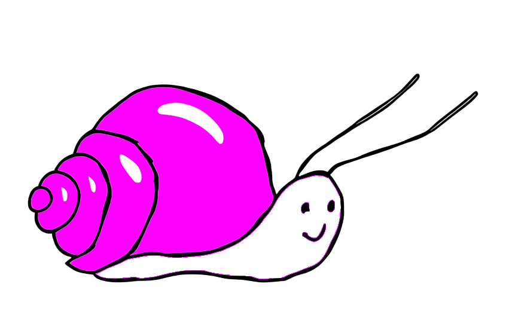

R para el tratamiento de Hojas de Cálculo
Tercer encuentro: Archivos en la nube y formato
2025-11-25
Resumen del encuentro anterior
- Pipes
- Listas e iteración en R
- Trabajo con múltiples archivos o pestañas
- Exportando objetos
Objetivos de hoy
- Operaciones comunes con dataframes
- Conectar R con Google Sheets
- Leer y escribir datos en hojas de cálculo en la nube
- Trabajar con formato de celdas
- Importar hojas con formato conservando su estructura
Trabajo con archivos en la nube
- Acceso desde cualquier máquina
- Colaboración en tiempo real
- Control de versiones
- Integración con otros servicios de Google (en caso de Google Sheets)
Paquetes para hoy

googlesheets4

googledrive
Solo lectura, archivos públicos
Para acceder a recursos públicos en modalidad solo lectura, usamos gs4_deauth() (sin argumentos).
Imporando hojas con googlesheets4
Usamos read_sheet() y nos referimos a los archivos por URL o ID.
Ejercicio - Traslados
Importa este archivo público de Google Sheets que contiene datos de traslados durante un congreso, el ID es:
1v38NIbOj9wAMBmB8MYLIczQjsblrc1g5Ns3ssa05owE
¿Hay alguna columna que nos gustaría modificar para mejorar la estructura de los datos?
Inició de sesión con Google
Para poder trabajar con archivos privados y/o modificar las hojas, necesitamos una cuenta de Google para iniciar sesión.
También podemos usar un archivo de credenciales o tokens existentes
gs4_auth(path = "tu_archivo_credenciales.json")
gs4_auth(token = "token.rds")
Accediendo a hojas de Google Sheets
Trabajando con hojas/pestañas específicas
También podemos usar el argumento range para leer rangos específicos (ej, “A1:D20”)
Ejercicio - Múltiples Hojas
Importar todas las hojas de este Google Sheets, el ID es:
1E01TbbwZ4S_RWX5RhkrjKXuyRG1EvT5Iog9QHuhIoms
Escribiendo datos a Google Sheets
Archivos en Sheets y Drive
Archivos en Sheets y Drive
Trabajando con formato en celdas o texto
¿Formato?
- Colores de fondo o texto que representan información
- Celdas combinadas
- Alineación específica de datos
- Fuentes o tamaños de texto significativos
- Bordes que denotan agrupaciones
Revisemos el archivo gwater.xlsx
Datos críticos de agua subterránea municipal
| Sitio | Cambio permeabilidad1 | Litros extraidos2 |
|---|---|---|
| A | 120 | 814 |
| A | 139 | 561 |
| B | 331 | 77 |
| C | 267 | 613 |
| C | 133 | 89 |
| D | 157 | 756 |
| 1 Valores negativos en negritas | ||
| 2 Sitios aprobados en amarillo | ||
Veterinaria
| Nombre | Tipo | Peso1 | Chip2 |
|---|---|---|---|
| Max | gato | 8.2 | si |
| Bear | perro | 68.9 | si |
| Luna | perro | 33.0 | si |
| Cooper | gato | 4.1 | si |
| Banjo | perro | 36.5 | si |
| Pebbles | gato | 10.7 | no |
| Brutus | perro | 81.0 | si |
| 1 Negro = libras, Azul = kilos | |||
| 2 Naranja = falta revisar | |||
# A tibble: 7 × 4
Nombre Tipo Peso Chip
<chr> <chr> <dbl> <chr>
1 Max gato 8.2 si
2 Bear perro 68.9 si
3 Luna perro 33 si
4 Cooper gato 4.1 si
5 Banjo perro 36.5 si
6 Pebbles gato 10.7 no
7 Brutus perro 81 si Importando hojas con formato
unheadr
Sitio official
Funciones para limpar datos
Combina
readxlytidyxlpara desenterrar los valores de formato en hojas de cálculo y los pega a los valores de celda
Desenmascarando el formato

El formato en una hoja de cálculo puede contener información valiosa que no se captura al importar los datos como un data frame tradicional.
Cambiemos la extensión de alguna hoja con formato a .zip y exploremos su contenido.
Ejemplo caracoles

“los días de muestreo se indican en amarillo”

Demostración unheadr
Importemos y procesemos los ejemplos de agua y mascotas usando unheadr
Extrayendo información de celdas con formato
Para el próximo encuentro…
- Resolveremos problemas comunes con hojas de cálculo:
- Manejo de fechas
- Encabezados problemáticos
- Disposiciones irregulares de datos
- Analizaremos ejemplos reales
- Discutiremos recursos útiles y mejores prácticas